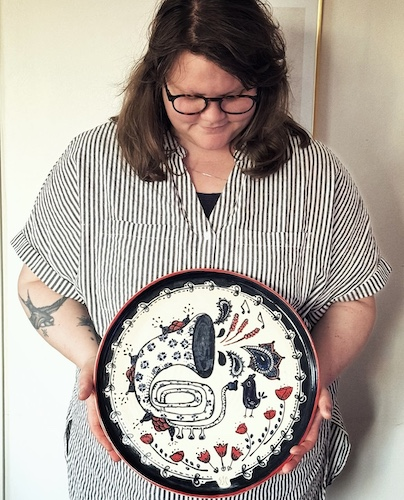

Om mig
Madicken Stjernlöf heter jag och det är jag som driver Ateljé Oroshjärta. Här skapar jag bild och form som speglar naturens färger och former. Årstiderna är min största inspirationskälla. Jag fascineras av hur ljus, färger och former förändras under året — hur sommaren fyller världen med rörelse och ljud, och hur vintern dämpar allt till stillhet. I mitt arbete försöker jag gestalta dessa skiftningar, så att varje verk får bära spår av den tid det skapades i.
Min konstnärliga resa började redan på gymnasiet, där jag gick det estetiska programmet med inriktning bild och formgivning. Sedan dess har jag fortsatt att utforska skapandet i olika former - genom keramikutbildningen på Vårdinge folkhögskola, recycle design på Eskilstuna folkhögskola, ljud- och musikproduktion på högskolan Dalarna, och som digital innehållsproducent via TUC yrkeshögskola.
Idag arbetar jag främst med lera, digitalt måleri och fotografi - tre medier som låter mig förena det taktila med det visuella. Jag har även en bakgrund som lokförare, ett yrke som gett mig ett unikt perspektiv på rörelse, kontraster och stillhet - upplevelser som ofta speglas i mitt skapande. Som lokförare upplever man ofta långa sträckor av lugn och monotoni på spåret - tysta landskap, öppna vyer, och nästan meditativa perioder mellan stationer och trafik. Samtidigt har man kontroll och ansvar över tåget, vilket gör att det inte är en passiv stillhet utan en aktiv koncentration i ett stillsamt tempo.
Ateljé Oroshjärta är min fristad. Här vill jag fortsätta utforska det konstnärliga, följa nyfikenheten och låta skapandet bli ett sätt att bryta mig loss från ekorrhjulet och leva mer i takt med naturen och mig själv.